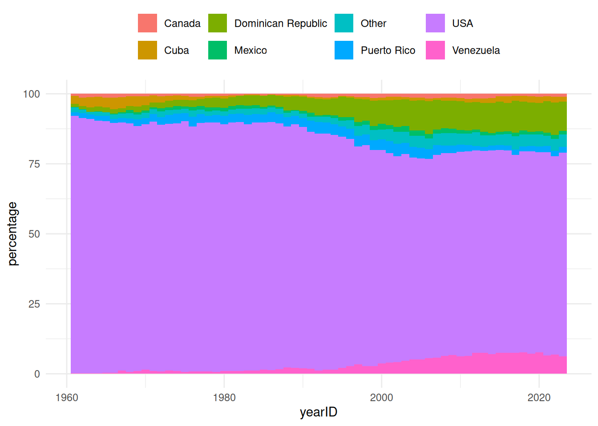

library(DBI)
library(duckdb)
library(dplyr)
library(tidyr)
library(purrr)
library(cli)
library(dbplyr)
library(Lahman)
db <- dbConnect(duckdb(), dbdir = ":memory:")
copy_lahman(db)4 Building analytic pipelines for a data model
In the previous chapters we’ve seen that after connecting to a database we can create references to the various tables we’ve interested in it and write bespoke analytic code to query them. However, if we are working with the same database over and over again we are likely to want to build some tooling for tasks we are often performing.
To see how we can develop a data model with associated methods and functions we’ll use the Lahman baseball data. We can see below how the data is stored across various related tables.

4.1 Defining a data model
Instead of manually creating references to tables of interest as we go, we will write a function to create a single reference to the Lahman data.
lahmanFromCon <- function(con) {
lahmanRef <- c(
"AllstarFull", "Appearances", "AwardsManagers", "AwardsPlayers", "AwardsManagers",
"AwardsShareManagers", "Batting", "BattingPost", "CollegePlaying", "Fielding",
"FieldingOF", "FieldingOFsplit", "FieldingPost", "HallOfFame", "HomeGames",
"LahmanData", "Managers", "ManagersHalf", "Parks", "People", "Pitching",
"PitchingPost", "Salaries", "Schools", "SeriesPost", "Teams", "TeamsFranchises",
"TeamsHalf"
) |>
set_names() |>
map(\(x) tbl(con, x))
class(lahmanRef) <- c("lahman_ref", class(lahmanRef))
lahmanRef
}With this function we can now easily get references to all our lahman tables in one go using our lahmanFromCon() function.
lahman <- lahmanFromCon(db)
lahman$People |>
glimpse()Rows: ??
Columns: 26
Database: DuckDB v1.2.1 [unknown@Linux 6.11.0-1012-azure:R 4.5.0/:memory:]
$ playerID <chr> "aardsda01", "aaronha01", "aaronto01", "aasedo01", "abada…
$ birthYear <int> 1981, 1934, 1939, 1954, 1972, 1985, 1850, 1877, 1869, 186…
$ birthMonth <int> 12, 2, 8, 9, 8, 12, 11, 4, 11, 10, 9, 3, 10, 2, 8, 9, 6, …
$ birthDay <int> 27, 5, 5, 8, 25, 17, 4, 15, 11, 14, 20, 16, 22, 16, 17, 1…
$ birthCity <chr> "Denver", "Mobile", "Mobile", "Orange", "Palm Beach", "La…
$ birthCountry <chr> "USA", "USA", "USA", "USA", "USA", "D.R.", "USA", "USA", …
$ birthState <chr> "CO", "AL", "AL", "CA", "FL", "La Romana", "PA", "PA", "V…
$ deathYear <int> NA, 2021, 1984, NA, NA, NA, 1905, 1957, 1962, 1926, NA, 1…
$ deathMonth <int> NA, 1, 8, NA, NA, NA, 5, 1, 6, 4, NA, 2, 6, NA, NA, NA, N…
$ deathDay <int> NA, 22, 16, NA, NA, NA, 17, 6, 11, 27, NA, 13, 11, NA, NA…
$ deathCountry <chr> NA, "USA", "USA", NA, NA, NA, "USA", "USA", "USA", "USA",…
$ deathState <chr> NA, "GA", "GA", NA, NA, NA, "NJ", "FL", "VT", "CA", NA, "…
$ deathCity <chr> NA, "Atlanta", "Atlanta", NA, NA, NA, "Pemberton", "Fort …
$ nameFirst <chr> "David", "Hank", "Tommie", "Don", "Andy", "Fernando", "Jo…
$ nameLast <chr> "Aardsma", "Aaron", "Aaron", "Aase", "Abad", "Abad", "Aba…
$ nameGiven <chr> "David Allan", "Henry Louis", "Tommie Lee", "Donald Willi…
$ weight <int> 215, 180, 190, 190, 184, 235, 192, 170, 175, 169, 220, 19…
$ height <int> 75, 72, 75, 75, 73, 74, 72, 71, 71, 68, 74, 71, 70, 78, 7…
$ bats <fct> R, R, R, R, L, L, R, R, R, L, R, R, R, R, R, L, R, L, L, …
$ throws <fct> R, R, R, R, L, L, R, R, R, L, R, R, R, R, L, L, R, L, R, …
$ debut <chr> "2004-04-06", "1954-04-13", "1962-04-10", "1977-07-26", "…
$ bbrefID <chr> "aardsda01", "aaronha01", "aaronto01", "aasedo01", "abada…
$ finalGame <chr> "2015-08-23", "1976-10-03", "1971-09-26", "1990-10-03", "…
$ retroID <chr> "aardd001", "aaroh101", "aarot101", "aased001", "abada001…
$ deathDate <date> NA, 2021-01-22, 1984-08-16, NA, NA, NA, 1905-05-17, 1957…
$ birthDate <date> 1981-12-27, 1934-02-05, 1939-08-05, 1954-09-08, 1972-08-…
The dm package
In this chapter we will be creating a bespoke data model for our database. This approach can be further extended using the dm package, which also provides various helpful functions for creating a data model and working with it.
Similar to above, we can use dm to create a single object to access our database tables.
library(dm)
lahman_dm <- dm(batting = tbl(db, "Batting"),
people = tbl(db, "People"))
lahman_dm── Table source ────────────────────────────────────────────────────────────────
src: DuckDB v1.2.1 [unknown@Linux 6.11.0-1012-azure:R 4.5.0/:memory:]
── Metadata ────────────────────────────────────────────────────────────────────
Tables: `batting`, `people`
Columns: 48
Primary keys: 0
Foreign keys: 0Using this approach, we can make use of various utility functions. For example here we specify primary and foreign keys and then check that the key constraints are satisfied.
lahman_dm <- lahman_dm %>%
dm_add_pk(people, playerID) %>%
dm_add_fk(batting, playerID, people)
lahman_dm── Table source ────────────────────────────────────────────────────────────────
src: DuckDB v1.2.1 [unknown@Linux 6.11.0-1012-azure:R 4.5.0/:memory:]
── Metadata ────────────────────────────────────────────────────────────────────
Tables: `batting`, `people`
Columns: 48
Primary keys: 1
Foreign keys: 1dm_examine_constraints(lahman_dm)ℹ All constraints satisfied.For more information on the dm package see https://dm.cynkra.com/index.html
4.2 Creating functions for the data model
We can also now make various functions specific to our Lahman data model to facilitate data analyses. Given we know the structure of the data, we can build a set of functions that abstract away some of the complexities of working with data in a database.
Let’s start by making a small function to get the teams players have played for. We can see that the code we use follows on from the last couple of chapters.
getTeams <- function(lahman, name = "Barry Bonds") {
lahman$Batting |>
inner_join(
lahman$People |>
mutate(full_name = paste0(nameFirst, " ", nameLast)) |>
filter(full_name %in% name) |>
select("playerID"),
by = join_by(playerID)
) |>
select(
"teamID",
"yearID"
) |>
distinct() |>
left_join(lahman$Teams,
by = join_by(teamID, yearID)
) |>
select("name") |>
distinct()
}Now we can easily get the different teams a player represented. We can see how changing the player name changes the SQL that is getting run behind the scenes.
getTeams(lahman, "Babe Ruth")# Source: SQL [?? x 1]
# Database: DuckDB v1.2.1 [unknown@Linux 6.11.0-1012-azure:R 4.5.0/:memory:]
name
<chr>
1 Boston Red Sox
2 Boston Braves
3 New York Yankees
Show query
<SQL>
SELECT DISTINCT q01.*
FROM (
SELECT "name"
FROM (
SELECT DISTINCT q01.*
FROM (
SELECT teamID, yearID
FROM Batting
INNER JOIN (
SELECT playerID
FROM (
SELECT People.*, CONCAT_WS('', nameFirst, ' ', nameLast) AS full_name
FROM People
) q01
WHERE (full_name IN ('Babe Ruth'))
) RHS
ON (Batting.playerID = RHS.playerID)
) q01
) LHS
LEFT JOIN Teams
ON (LHS.teamID = Teams.teamID AND LHS.yearID = Teams.yearID)
) q01getTeams(lahman, "Barry Bonds")# Source: SQL [?? x 1]
# Database: DuckDB v1.2.1 [unknown@Linux 6.11.0-1012-azure:R 4.5.0/:memory:]
name
<chr>
1 San Francisco Giants
2 Pittsburgh Pirates
Show query
<SQL>
SELECT DISTINCT q01.*
FROM (
SELECT "name"
FROM (
SELECT DISTINCT q01.*
FROM (
SELECT teamID, yearID
FROM Batting
INNER JOIN (
SELECT playerID
FROM (
SELECT People.*, CONCAT_WS('', nameFirst, ' ', nameLast) AS full_name
FROM People
) q01
WHERE (full_name IN ('Barry Bonds'))
) RHS
ON (Batting.playerID = RHS.playerID)
) q01
) LHS
LEFT JOIN Teams
ON (LHS.teamID = Teams.teamID AND LHS.yearID = Teams.yearID)
) q01
Choosing the right time to collect data into R
The function collect() brings data out of the database and into R. When working with large datasets, as is often the case when interacting with a database, we typically want to keep as much computation as possible on the database side. In the case of our getTeams() function, for example, it does everything on the database side and so collecting will just bring out the result of the teams the person played for. In this case we could also use pull() to get our result out as a vector rather that a data frame.
getTeams(lahman, "Barry Bonds") |>
collect()# A tibble: 2 × 1
name
<chr>
1 San Francisco Giants
2 Pittsburgh Pirates getTeams(lahman, "Barry Bonds") |>
pull()[1] "Pittsburgh Pirates" "San Francisco Giants"In other cases however we may need to collect data so as to perform further analysis steps that are not possible using SQL. This might be the case for plotting or for other analytic steps like fitting statistical models. In such cases we should try to only bring out the data that we need (as we will likely have much less memory available on our local computer than is available for the database).
Similarly we could make a function to add the a player’s year of birth to a table.
addBirthCountry <- function(lahmanTbl){
lahmanTbl |>
left_join(lahman$People |>
select("playerID", "birthCountry"),
join_by("playerID"))
}lahman$Batting |>
addBirthCountry()# Source: SQL [?? x 23]
# Database: DuckDB v1.2.1 [unknown@Linux 6.11.0-1012-azure:R 4.5.0/:memory:]
playerID yearID stint teamID lgID G AB R H X2B X3B HR
<chr> <int> <int> <fct> <fct> <int> <int> <int> <int> <int> <int> <int>
1 aardsda01 2004 1 SFN NL 11 0 0 0 0 0 0
2 aardsda01 2006 1 CHN NL 45 2 0 0 0 0 0
3 aardsda01 2007 1 CHA AL 25 0 0 0 0 0 0
4 aardsda01 2008 1 BOS AL 47 1 0 0 0 0 0
5 aardsda01 2009 1 SEA AL 73 0 0 0 0 0 0
6 aardsda01 2010 1 SEA AL 53 0 0 0 0 0 0
7 aardsda01 2012 1 NYA AL 1 0 0 0 0 0 0
8 aardsda01 2013 1 NYN NL 43 0 0 0 0 0 0
9 aardsda01 2015 1 ATL NL 33 1 0 0 0 0 0
10 aaronha01 1954 1 ML1 NL 122 468 58 131 27 6 13
# ℹ more rows
# ℹ 11 more variables: RBI <int>, SB <int>, CS <int>, BB <int>, SO <int>,
# IBB <int>, HBP <int>, SH <int>, SF <int>, GIDP <int>, birthCountry <chr>
Show query
<SQL>
SELECT Batting.*, birthCountry
FROM Batting
LEFT JOIN People
ON (Batting.playerID = People.playerID)lahman$Pitching |>
addBirthCountry()# Source: SQL [?? x 31]
# Database: DuckDB v1.2.1 [unknown@Linux 6.11.0-1012-azure:R 4.5.0/:memory:]
playerID yearID stint teamID lgID W L G GS CG SHO SV
<chr> <int> <int> <fct> <fct> <int> <int> <int> <int> <int> <int> <int>
1 aardsda01 2004 1 SFN NL 1 0 11 0 0 0 0
2 aardsda01 2006 1 CHN NL 3 0 45 0 0 0 0
3 aardsda01 2007 1 CHA AL 2 1 25 0 0 0 0
4 aardsda01 2008 1 BOS AL 4 2 47 0 0 0 0
5 aardsda01 2009 1 SEA AL 3 6 73 0 0 0 38
6 aardsda01 2010 1 SEA AL 0 6 53 0 0 0 31
7 aardsda01 2012 1 NYA AL 0 0 1 0 0 0 0
8 aardsda01 2013 1 NYN NL 2 2 43 0 0 0 0
9 aardsda01 2015 1 ATL NL 1 1 33 0 0 0 0
10 aasedo01 1977 1 BOS AL 6 2 13 13 4 2 0
# ℹ more rows
# ℹ 19 more variables: IPouts <int>, H <int>, ER <int>, HR <int>, BB <int>,
# SO <int>, BAOpp <dbl>, ERA <dbl>, IBB <int>, WP <int>, HBP <int>, BK <int>,
# BFP <int>, GF <int>, R <int>, SH <int>, SF <int>, GIDP <int>,
# birthCountry <chr>
Show query
<SQL>
SELECT Pitching.*, birthCountry
FROM Pitching
LEFT JOIN People
ON (Pitching.playerID = People.playerID)We could then use our addBirthCountry() function as part of a larger query to summarise the proportion of players from each country over time (based on their presence in the batting table).
plot_data <- lahman$Batting |>
select(playerID, yearID) |>
addBirthCountry() |>
filter(yearID > 1960) |>
mutate(birthCountry = case_when(
birthCountry == "USA" ~ "USA",
birthCountry == "D.R." ~ "Dominican Republic",
birthCountry == "Venezuela" ~ "Venezuela",
birthCountry == "P.R." ~ "Puerto Rico ",
birthCountry == "Cuba" ~ "Cuba",
birthCountry == "CAN" ~ "Canada",
birthCountry == "Mexico" ~ "Mexico",
.default = "Other"
)) |>
summarise(n = n(), .by = c("yearID", "birthCountry")) |>
group_by(yearID) |>
mutate(percentage = n / sum(n) * 100) |>
ungroup() |>
collect()
Show query
<SQL>
SELECT q01.*, (n / SUM(n) OVER (PARTITION BY yearID)) * 100.0 AS percentage
FROM (
SELECT yearID, birthCountry, COUNT(*) AS n
FROM (
SELECT
playerID,
yearID,
CASE
WHEN (birthCountry = 'USA') THEN 'USA'
WHEN (birthCountry = 'D.R.') THEN 'Dominican Republic'
WHEN (birthCountry = 'Venezuela') THEN 'Venezuela'
WHEN (birthCountry = 'P.R.') THEN 'Puerto Rico '
WHEN (birthCountry = 'Cuba') THEN 'Cuba'
WHEN (birthCountry = 'CAN') THEN 'Canada'
WHEN (birthCountry = 'Mexico') THEN 'Mexico'
ELSE 'Other'
END AS birthCountry
FROM (
SELECT Batting.playerID AS playerID, yearID, birthCountry
FROM Batting
LEFT JOIN People
ON (Batting.playerID = People.playerID)
) q01
WHERE (yearID > 1960.0)
) q01
GROUP BY yearID, birthCountry
) q01library(ggplot2)
plot_data |>
ggplot() +
geom_col(aes(yearID,
percentage,
fill = birthCountry), width=1) +
theme_minimal() +
theme(legend.title = element_blank(),
legend.position = "top")
Defining methods for the data model
As part of our lahmanFromCon() function our data model object has the class “lahman_ref”. Therefore as well as creating user-facing functions to work with our lahman data model, we can also define methods for this object.
class(lahman)[1] "lahman_ref" "list" With this we can make some specific methods for a “lahman_ref” object. For example, we can define a print method like so:
print.lahman_ref <- function(x, ...) {
len <- length(names(x))
cli_h1("# Lahman reference - {len} tables")
cli_li(paste(
"{.strong tables:}",
paste(names(x), collapse = ", ")
))
invisible(x)
}Now we can see a summary of our lahman data model when we print the object.
lahman── # Lahman reference - 28 tables ──────────────────────────────────────────────• tables: AllstarFull, Appearances, AwardsManagers, AwardsPlayers,
AwardsManagers, AwardsShareManagers, Batting, BattingPost, CollegePlaying,
Fielding, FieldingOF, FieldingOFsplit, FieldingPost, HallOfFame, HomeGames,
LahmanData, Managers, ManagersHalf, Parks, People, Pitching, PitchingPost,
Salaries, Schools, SeriesPost, Teams, TeamsFranchises, TeamsHalfAnd we can see that this print is being done by the method we defined.
library(sloop)
s3_dispatch(print(lahman))=> print.lahman_ref
print.list
* print.default4.3 Building efficient analytic pipelines
4.3.1 The risk of “clean” R code
Following on from the above approach, we might think it a good idea to make another function addBirthYear(). We can then use it along with our addBirthCountry() to get a summarise average salary by birth country and birth year.
addBirthYear <- function(lahmanTbl){
lahmanTbl |>
left_join(lahman$People |>
select("playerID", "birthYear"),
join_by("playerID"))
}
lahman$Salaries |>
addBirthCountry() |>
addBirthYear() |>
summarise(average_salary = mean(salary),
.by = c("birthCountry", "birthYear"))# Source: SQL [?? x 3]
# Database: DuckDB v1.2.1 [unknown@Linux 6.11.0-1012-azure:R 4.5.0/:memory:]
birthCountry birthYear average_salary
<chr> <int> <dbl>
1 USA 1955 869334.
2 USA 1954 860729.
3 USA 1947 1074135.
4 D.R. 1958 866051.
5 USA 1958 960490.
6 Venezuela 1953 628409.
7 USA 1962 1309433.
8 Venezuela 1964 1388324.
9 USA 1941 679429
10 P.R. 1957 291333.
# ℹ more rowsAlthough the R code on the face of it looks fine, when we look at the SQL we can see that our query has two joins to the People table. One join gets information on the birth country and the other on the birth year.
Show query
<SQL>
SELECT birthCountry, birthYear, AVG(salary) AS average_salary
FROM (
SELECT
Salaries.*,
"People...2".birthCountry AS birthCountry,
"People...3".birthYear AS birthYear
FROM Salaries
LEFT JOIN People "People...2"
ON (Salaries.playerID = "People...2".playerID)
LEFT JOIN People "People...3"
ON (Salaries.playerID = "People...3".playerID)
) q01
GROUP BY birthCountry, birthYearTo improve performance, we could instead have a single function to get both of these, birth country and birth year, at the same time.
addCharacteristics <- function(lahmanTbl){
lahmanTbl |>
left_join(lahman$People |>
select("playerID", "birthYear", "birthCountry"),
join_by("playerID"))
}
lahman$Salaries |>
addCharacteristics() |>
summarise(average_salary = mean(salary),
.by = c("birthCountry", "birthYear"))# Source: SQL [?? x 3]
# Database: DuckDB v1.2.1 [unknown@Linux 6.11.0-1012-azure:R 4.5.0/:memory:]
birthCountry birthYear average_salary
<chr> <int> <dbl>
1 USA 1954 860729.
2 USA 1967 1833526.
3 USA 1958 960490.
4 USA 1971 1547025.
5 USA 1963 1579269.
6 USA 1962 1309433.
7 P.R. 1982 4261730.
8 P.R. 1969 2261780.
9 USA 1983 3501904.
10 D.R. 1971 3461094
# ℹ more rows
Show query
<SQL>
SELECT birthCountry, birthYear, AVG(salary) AS average_salary
FROM (
SELECT Salaries.*, birthYear, birthCountry
FROM Salaries
LEFT JOIN People
ON (Salaries.playerID = People.playerID)
) q01
GROUP BY birthCountry, birthYearNow this query outputs the same result but is simpler than the previous one, thus lowering the computational cost of the analysis. All this is to show that when working with databases we should keep in mind what is going on behind the scenes in terms of the SQL code actually being executed.
4.3.2 Piping and SQL
Although piping functions has little impact on performance when using R with data in memory, when working with a database the SQL generated will differ when using multiple function calls (with a separate operation specified in each) instead of multiple operations within a single function call.
For example, a single mutate function creating two new variables would generate the below SQL.
lahman$People |>
mutate(birthDatePlus1 =
add_years(birthDate, 1L),
birthDatePlus10 =
add_years(birthDate, 10L)) |>
select("playerID",
"birthDatePlus1",
"birthDatePlus10") |>
show_query()<SQL>
SELECT
playerID,
DATE_ADD(birthDate, INTERVAL (1) year) AS birthDatePlus1,
DATE_ADD(birthDate, INTERVAL (10) year) AS birthDatePlus10
FROM PeopleWhereas the SQL will be different if these were created using multiple mutate calls (with now one being created in a sub-query).
lahman$People |>
mutate(birthDatePlus1 =
add_years(birthDate, 1L)) |>
mutate(birthDatePlus10 =
add_years(birthDate, 10L)) |>
select("playerID",
"birthDatePlus1",
"birthDatePlus10") |>
show_query()<SQL>
SELECT
playerID,
birthDatePlus1,
DATE_ADD(birthDate, INTERVAL (10) year) AS birthDatePlus10
FROM (
SELECT People.*, DATE_ADD(birthDate, INTERVAL (1) year) AS birthDatePlus1
FROM People
) q014.3.3 Computing intermediate queries
Let’s say we want to summarise home runs in the batting table and stike outs in the pitching table by the college players attended and their birth year. We could do this like so:
players_with_college <- lahman$People |>
select(playerID, birthYear) |>
inner_join(lahman$CollegePlaying |>
filter(!is.na(schoolID)) |>
select(playerID, schoolID) |>
distinct(),
by = join_by(playerID))
lahman$Batting |>
left_join(players_with_college,
by = join_by(playerID)) |>
summarise(home_runs = sum(H, na.rm = TRUE),
.by = c(schoolID, birthYear)) |>
collect()# A tibble: 6,206 × 3
schoolID birthYear home_runs
<chr> <int> <dbl>
1 rice 1981 0
2 ucsd 1968 3
3 virginia 1987 27
4 cacerri 1971 3
5 usc 1947 11
6 lsu 1927 1832
7 wake 1915 72
8 pepperdine 1969 1
9 lsu 1978 2
10 miamidade 1982 0
# ℹ 6,196 more rowslahman$Pitching |>
left_join(players_with_college,
by = join_by(playerID)) |>
summarise(strike_outs = sum(SO, na.rm = TRUE),
.by = c(schoolID, birthYear))|>
collect()# A tibble: 3,662 × 3
schoolID birthYear strike_outs
<chr> <int> <dbl>
1 illinoisst 1981 205
2 lehigh 1901 1
3 tamukvill 1978 409
4 byu 1961 1030
5 kentucky 1985 91
6 txsjjcn 1983 571
7 stanford 1961 0
8 bethanywv 1922 2
9 tulane 1968 59
10 nmnmjco 1972 232
# ℹ 3,652 more rowsLooking at the SQL we can see, however, that there is some duplication, because as part of each full query we have run our players_with_college query.
Show query
<SQL>
SELECT schoolID, birthYear, SUM(H) AS home_runs
FROM (
SELECT Batting.*, birthYear, schoolID
FROM Batting
LEFT JOIN (
SELECT People.playerID AS playerID, birthYear, schoolID
FROM People
INNER JOIN (
SELECT DISTINCT playerID, schoolID
FROM CollegePlaying
WHERE (NOT((schoolID IS NULL)))
) RHS
ON (People.playerID = RHS.playerID)
) RHS
ON (Batting.playerID = RHS.playerID)
) q01
GROUP BY schoolID, birthYear<SQL>
SELECT schoolID, birthYear, SUM(SO) AS strike_outs
FROM (
SELECT Pitching.*, birthYear, schoolID
FROM Pitching
LEFT JOIN (
SELECT People.playerID AS playerID, birthYear, schoolID
FROM People
INNER JOIN (
SELECT DISTINCT playerID, schoolID
FROM CollegePlaying
WHERE (NOT((schoolID IS NULL)))
) RHS
ON (People.playerID = RHS.playerID)
) RHS
ON (Pitching.playerID = RHS.playerID)
) q01
GROUP BY schoolID, birthYearTo avoid this we could instead make use of the compute() function to force the computation of this first, intermediate, query to a temporary table in the database.
players_with_college <- players_with_college |>
compute()Now we have a temporary table with the result of our players_with_college query, and we can use this in both of our aggregation queries.
players_with_college |>
show_query()<SQL>
SELECT *
FROM dbplyr_bAHCiCSwlrlahman$Batting |>
left_join(players_with_college,
by = join_by(playerID)) |>
summarise(home_runs = sum(H, na.rm = TRUE),
.by = c(schoolID, birthYear)) |>
collect()# A tibble: 6,206 × 3
schoolID birthYear home_runs
<chr> <int> <dbl>
1 vermont 1869 38
2 michigan 1967 2
3 nmstate 1968 0
4 cacerri 1971 3
5 chicago 1874 2
6 byu 1961 28
7 pepperdine 1969 1
8 lsu 1978 2
9 miamidade 1982 0
10 stanford 1961 1611
# ℹ 6,196 more rowslahman$Pitching |>
left_join(players_with_college,
by = join_by(playerID)) |>
summarise(strike_outs = sum(SO, na.rm = TRUE),
.by = c(schoolID, birthYear))|>
collect()# A tibble: 3,662 × 3
schoolID birthYear strike_outs
<chr> <int> <dbl>
1 vermont 1869 161
2 michigan 1967 888
3 nmstate 1968 98
4 cacerri 1971 327
5 byu 1961 1030
6 pepperdine 1969 4
7 lsu 1978 162
8 miamidade 1982 56
9 stanford 1961 0
10 incante 1893 526
# ℹ 3,652 more rows
Show query
<SQL>
SELECT schoolID, birthYear, SUM(H) AS home_runs
FROM (
SELECT Batting.*, birthYear, schoolID
FROM Batting
LEFT JOIN dbplyr_bAHCiCSwlr
ON (Batting.playerID = dbplyr_bAHCiCSwlr.playerID)
) q01
GROUP BY schoolID, birthYear<SQL>
SELECT schoolID, birthYear, SUM(SO) AS strike_outs
FROM (
SELECT Pitching.*, birthYear, schoolID
FROM Pitching
LEFT JOIN dbplyr_bAHCiCSwlr
ON (Pitching.playerID = dbplyr_bAHCiCSwlr.playerID)
) q01
GROUP BY schoolID, birthYearIn this case the SQL from our initial approach was not so complicated. However, you can imagine that without using computation to intermediate tables, the SQL associated with a series of data manipulations could quickly become unmanageable. Moreover, we can end up with inefficient code that repeatedly gets the same result as part of a larger query. Therefore although we don’t want to overuse computation of intermediate queries, it is often a necessity when creating our analytic pipelines.